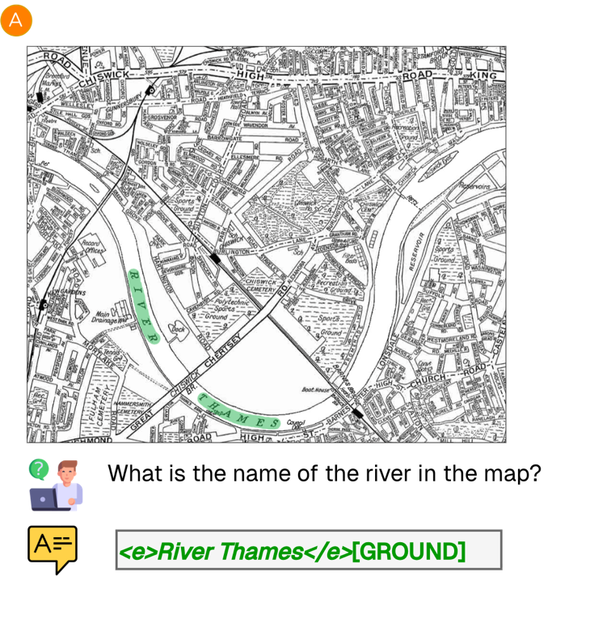
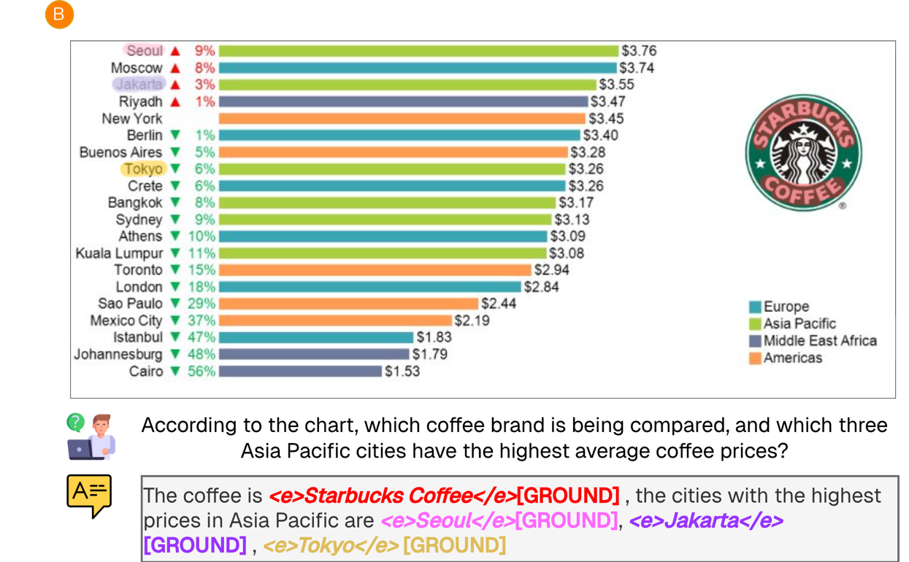
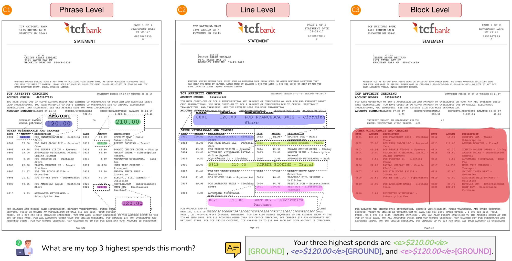
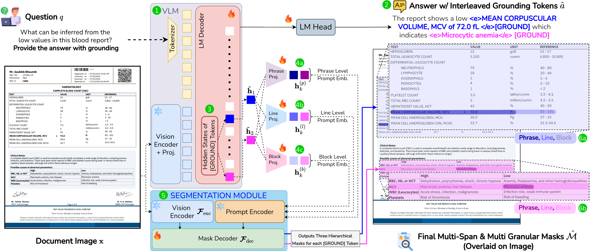
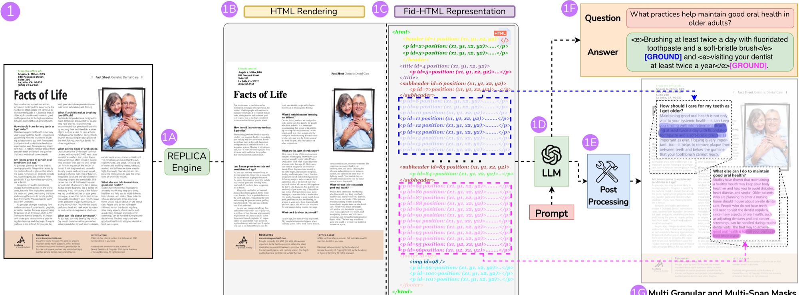
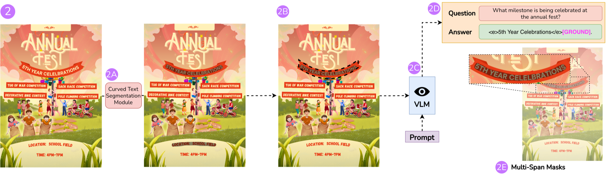
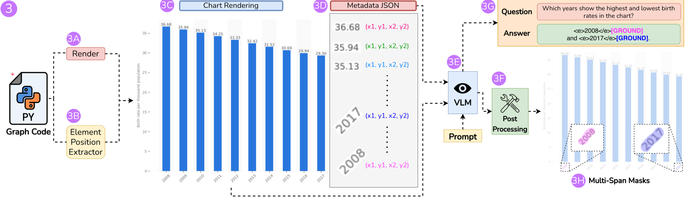

M3Grounder
Mask-Based Multi-Span and Multi-Granular Grounding for Document QA
Venkata Kesav Venna* · Sai Madhusudan Gunda* · Jyothi Swaroopa Jinka† · Hrithik Sagar Rachakonda† · Anirudh Srinivasan · Ravi Kiran Sarvadevabhatla
*, † equal contribution · BharatGen · IIIT Hyderabad · m3grounder.github.io
Any shape of evidence — one span or many


…and the same evidence at three granularities

What the model actually outputs
Q: “Which value is abnormal, and what does it indicate?”
A: "The report shows a low <e>MCV of 72.0 fL</e>[GROUND] which indicates <e>Microcytic anemia</e>[GROUND]"
fθ(x, q) → (â, {M̂k(i)}k=1…K)
each [GROUND] k → three nested masks, i ∈ {p, l, b}
Multi-span
K is free — one answer, many disjoint regions. K = 0 → M̂ = ∅, a plain answer.
Multi-granular
Different uses need different scopes: cite a number, redact a row, chunk a section.
VLM + three MLP heads + promptable segmenter

① VLM encodes page + question · ② answer with interleaved [GROUND] · ③ hidden states h̃k · ④ 3 granularity MLP heads
⑤ dense features z, encoded once · ⑥ mask decoder → hierarchical masks
Backbones: InternVL3.5-8B (-I) / Qwen3-VL-8B (-Q) · segmenter: SAM, backbone-agnostic · grounding adds +63 ms per sample (508 vs 445 ms, 1×H100)
The forward pass, animated — a lab report walks through the model
One objective, four losses
𝓛lm
next-token cross-entropy — the answer text itself
𝓛seg
Dice + BCE on every mask, at each granularity
𝓛bleed NOVEL
stay on the text — no spilling into graphics
𝓛hier NOVEL
the three masks must nest: p ⊂ l ⊂ b
The two novel losses encode document priors the generic segmentation losses don't know about — next two slides.
𝓛bleed — don't spill off the text
= Σ M̂ ⊙ (1 − Mtext) / (Σ M̂ + ε) · Mtext = union of all text pixels
A fraction — a small mask is policed as strictly as a large one.
𝓛hier — make the masks nest
the coarser mask is the ground truth of the next level up · applied to (phrase→line) and (line→block)
Charts are single-level — no line/block, so no 𝓛hier there.
GroundingDocQA: 200K docs · 2M QA — no hand-drawn masks

① 140K layout-aware documents
REPLICA rebuilds each page as ID-tagged "Fid-HTML" (1A–1C) → an LLM writes QA citing element IDs, never coordinates (1D) → post-processing maps IDs back to boxes, Hi-SAM turns them into masks (1E) → grounded QA pairs (1F–1G). Hallucinated geometry is impossible by construction.
Curved text: highlight, then ask

② 10K curved-text documents
curvature detection (2A) → the curved mask is overlaid on the page as a Set-of-Mark highlight (2B) → a VLM (2C) writes QA strictly about the highlighted region — the mask exists before the question does, so grounding is exact by construction.
Charts: intercept the renderer

③ 50K charts
Renderer interception: execute the plot script (3A), record every element's true position at render time — axes, ticks, bars, legends (3B–3D) → a VLM writes QA against the ID-tagged elements → IDs map back to exact masks. No detection step, no guessing.
Every pair verified twice: E5-embedding similarity (span ↔ OCR of region) + LLM-judge (DeepSeek-R1) vs the source HTML · 52% single-span / 48% multi-span
GDQA-Bench — human-verified evaluation
Composition
geometry
spans
Scoring
F1g at IoU > 0.5 — single-span, multi-span (bipartite matching), and a separate curved/skewed split · AQ by G-Eval judge.
Fairness: predictions are converted to each benchmark's native annotation format — boxes rasterized to masks, masks tightly boxed.
Boxes plateau. Masks jump.
Grounding F1 on GDQA-Bench
higher is better · 0–100
…and vs the best prior on every other benchmark:
Answers stay top-tier: AQ 88.8 on BoundingDocs (GPT-5: 89.3 with F1g 5.4).
Ablations
| Setting (F1g ↑) | BD-T | DR-B | MD-B | GDQA-Bench | ||
|---|---|---|---|---|---|---|
| phrase | line | block | ||||
| w/o hierarchy (train phrase only) | 74.8 | 58.2 | 54.7 | 71.3 | – | – |
| 1× shared MLP + SAM | 64.2 | 61.7 | 53.5 | 63.6 | 69.3 | 77.6 |
| 𝓛lm + 𝓛seg | 78.3 | 70.1 | 65.6 | 74.0 | 77.6 | 84.4 |
| + 𝓛hier | 80.1 | 72.8 | 67.4 | 78.2 | 79.1 | 84.7 |
| + 𝓛bleed | 79.6 | 72.4 | 67.7 | 77.3 | 78.7 | 86.5 |
| LoRA instead of full fine-tune | 62.4 | 54.8 | 52.7 | 61.5 | 67.3 | 75.7 |
| M3Grounder-Q (all four losses) | 81.4 | 73.3 | 68.2 | 79.0 | 81.4 | 87.5 |
BD-T = BoundingDocs-Test · DR-B = DOGR-Bench · MD-B = MMDocBench, all at phrase level. Higher is better.
Three heads > one
A single shared prompt MLP drops phrase F1g to 63.6 (vs 79.0).
Hierarchy helps phrases
Training all 3 levels lifts phrase-only training from 71.3 → 79.0.
The two losses are complementary
Alone: +𝓛hier 78.2, +𝓛bleed 77.3. Together: 79.0.
LoRA can't localize
Fine-grained grounding needs full parameter updates: 61.5 vs 79.0.
Grounded answers, live — finance, legal, transcripts, charts
Built by


Thank you — questions?

M3Grounder (CVPR 2026)
BharatGen · IIIT Hyderabad